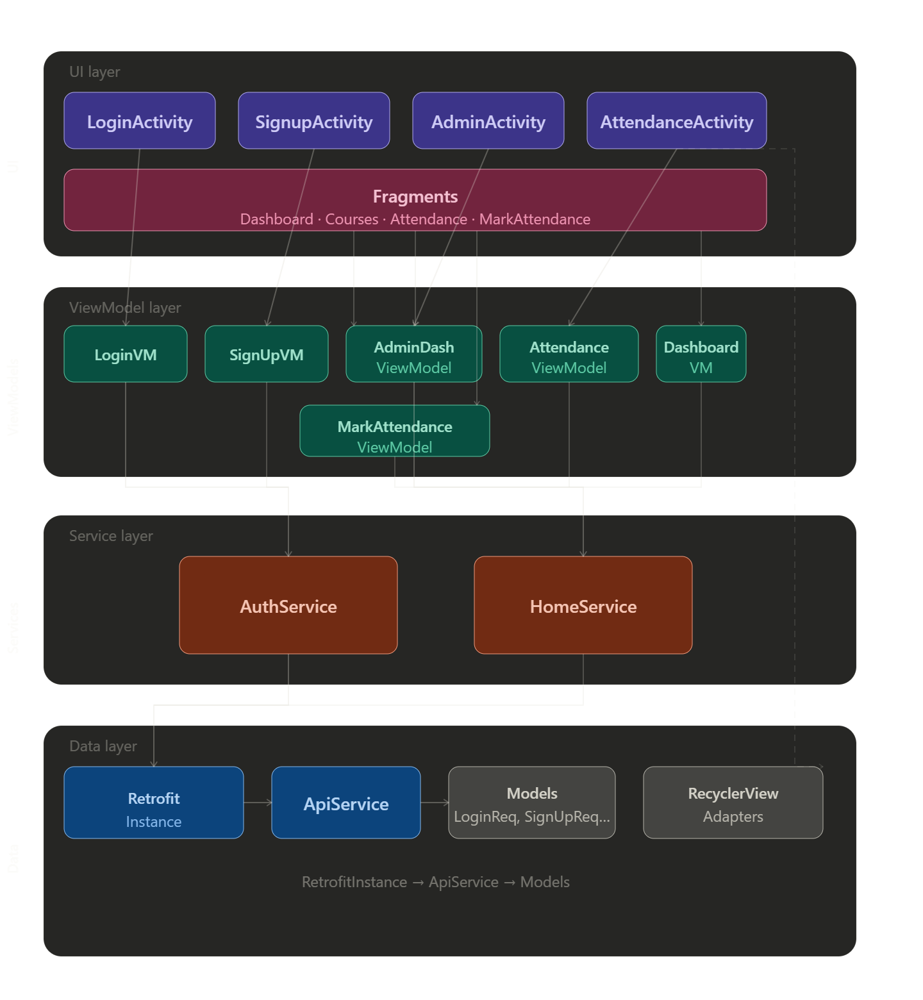

CampusCircleApp
Evaluation Preparation
1. Architecture Diagram

2. Features of the App
2.1 User Authentication
- Login (Email/Password & Google Sign-In)
- Signup (Email/Password & Google Sign-Up)
- Forgot Password
2.2 Student Dashboard
- View Dashboard Analytics
- View Enrolled Courses
- View Attendance History
2.3 Attendance Management
- Mark Attendance (Student & Admin)
- View Attendance History
2.4 Admin Features
- Admin Dashboard Analytics
- View All Courses
- View Enrollments by Course
- Mark Attendance for Students
2.5 Profile Management
3. Detailed Explanation of
Each Feature
3.1 User Authentication
Login (Email/Password &
Google Sign-In)
- Purpose: Securely authenticate users to access the
app.
- Details:
- Email/Password:
- User enters credentials in LoginActivity.
- LoginViewModel handles logic, calls AuthService, which uses Retrofit
to communicate with the backend.
- On success, user session is managed by SessionManager.
- Google Sign-In:
- Integrates Google Identity API for OAuth.
- Handles both existing and new users (if not found, triggers Google
sign-up flow).
- ViewModel manages UI state (loading, error, success).
Signup (Email/Password
& Google Sign-Up)
- Purpose: Register new users.
- Details:
- Email/Password:
- User provides details in SignupActivity.
- SignUpViewModel and AuthService handle registration via
Retrofit.
- Google Sign-Up:
- Uses Google account info to pre-fill registration.
- Handles partial account creation and completion.
Forgot Password
- Purpose: Account recovery for users who forget
their password.
- Details:
- User enters email, backend sends reset instructions (handled in
ForgetPassword.kt).
3.2 Student Dashboard
View Dashboard Analytics
- Purpose: Show students their academic and
attendance stats.
- Details:
- DashboardFragment fetches analytics via HomeService and
DashboardViewModel.
- Data visualized using MPAndroidChart.
View Enrolled Courses
- Purpose: List all courses a student is enrolled
in.
- Details:
- CoursesFragment displays courses using CourseAdapter
(RecyclerView).
- Data fetched from backend.
View Attendance History
- Purpose: Show attendance records per course.
- Details:
- AttendanceFragment uses AttendanceHistoryAdapter to display
history.
- Data fetched via HomeService.
3.3 Attendance Management
Mark Attendance (Student &
Admin)
- Purpose: Allow marking of attendance.
- Details:
- Students: Mark their own attendance in AttendenceActivity.
- Admins: Use MarkAttendanceFragment and MarkAttendanceStudentAdapter
to mark for students.
- Data sent to backend via Retrofit.
View Attendance History
- Purpose: See section 3.2 above (feature
reused).
3.4 Admin Features
Admin Dashboard Analytics
- Purpose: Show overall stats to admins.
- Details:
- AdminDashboardFragment and AdminDashboardViewModel fetch and display
analytics.
View All Courses
- Purpose: List all courses for admin
management.
- Details:
- AdminDashboardCourseAdapter displays courses in
AdminDashboardFragment.
View Enrollments by Course
- Purpose: Show which students are in each
course.
- Details:
- Data fetched and displayed in AdminDashboardFragment.
Mark Attendance for Students
- Purpose: Admins can mark attendance for any
student.
- Details:
- MarkAttendanceFragment and MarkAttendanceStudentAdapter handle UI
and logic.
3.5 Profile Management
View & Update Profile
- Purpose: Allow users to view and update their
info.
- Details:
- UserDataResponse model used to fetch and display data.
- UpdateUserRequest used for updates.
4.
Components List (Adapters, Retrofit, RecyclerView, etc.)
4.1 Adapters
- AdminDashboardCourseAdapter: Displays courses in
the admin dashboard (RecyclerView).
- AttendanceHistoryAdapter: Shows attendance history
for students (RecyclerView).
- CourseAdapter: Lists courses for students
(RecyclerView).
- MarkAttendanceStudentAdapter: Used by admin to mark
attendance for students (RecyclerView).
- StudentAdapter: Displays student lists
(RecyclerView).
4.2 Activities
- LoginActivity: Handles user login (email/password
& Google).
- SignupActivity: Handles user registration
(email/password & Google).
- AdminActivity: Main activity for admin users.
- AttendenceActivity: Main activity for student
attendance.
- BaseActivity: Common base for activities.
- MainActivity: App entry point.
4.3 Fragments
- DashboardFragment: Student dashboard
analytics.
- CoursesFragment: Shows enrolled courses.
- AttendanceFragment: Shows attendance history.
- MarkAttendanceFragment: Admin marks attendance for
students.
- AdminDashboardFragment: Admin dashboard analytics
and course management.
4.4 ViewModels
- LoginViewModel: Handles login logic and state.
- SignUpViewModel: Handles signup logic and
state.
- AdminDashboardViewModel: Admin dashboard
logic.
- AttendanceViewModel: Attendance logic for
students.
- DashboardViewModel: Student dashboard logic.
- MarkAttendanceViewModel: Admin attendance marking
logic.
4.5 Services
- AuthService: Handles authentication (login, signup,
Google sign-in, etc.).
- HomeService: Handles home/dashboard data
fetching.
4.6 Retrofit & Networking
- RetrofitInstance: Singleton for Retrofit
setup.
- ApiService: Retrofit interface for all backend API
calls.
4.7 Models
- LoginRequest, LoginResponse, SignUpRequest, SignUpResponse,
UpdateUserRequest, UserDataResponse, GoogleAuthRequest: Auth
models.
- AdminCourseResponse, AdminDashboardResponse,
AttendanceHistoryItem, DashboardAnalyticsResponse,
EnrollmentByCourseResponse, MarkAttendanceRequest,
StudentEnrollmentResponse: Home/admin models.
- apiResponse, UiState, ServiceResult: Core response
and state models.
4.8 Utilities & Helpers
- SessionManager: Manages user session and
tokens.
- MessageService: Shows messages/toasts.
- LoaderManager: Manages loading UI.
4.9 Libraries Used
- Retrofit2: Networking.
- Gson: JSON serialization.
- OkHttp: HTTP client.
- Kotlin Coroutines: Async operations.
- MPAndroidChart: Charts and analytics.
- Glide: Image loading.
- Google Identity API: Google sign-in.
- AndroidX Lifecycle/ViewModel: MVVM
architecture.
- MotionToast: Custom toasts.
- Material Components: UI components.
- RecyclerView: List rendering.
4.10 Resources
- Layouts: XML files for activities, fragments, and
list items.
- Drawables: Icons and images.
- Strings/Colors/Themes: App resources.
- Menus: Navigation and profile menus.
5.
Feature-to-Component Mapping & Usage/Alternatives
5.1 User Authentication
- Login (Email/Password & Google Sign-In)
- Components: LoginActivity, LoginViewModel,
AuthService, RetrofitInstance, ApiService, SessionManager, Google
Identity API
- Why Used:
- LoginActivity provides UI, ViewModel separates logic, AuthService
abstracts API calls, SessionManager manages tokens.
- Google Identity API is standard for OAuth.
- Alternatives:
- Firebase Authentication (alternative to custom backend)
- Manual HTTP calls (less maintainable than Retrofit)
- Signup (Email/Password & Google Sign-Up)
- Components: SignupActivity, SignUpViewModel,
AuthService, RetrofitInstance, ApiService
- Why Used:
- MVVM separation, Retrofit for networking, Google Identity for
OAuth.
- Alternatives:
- Firebase Auth, custom HTTP clients
- Forgot Password
- Components: ForgetPassword.kt, AuthService,
RetrofitInstance, ApiService
- Why Used:
- Standard flow for password recovery.
- Alternatives:
- Firebase Auth password reset
5.2 Student Dashboard
- View Dashboard Analytics
- Components: DashboardFragment, DashboardViewModel,
HomeService, RetrofitInstance, ApiService, MPAndroidChart
- Why Used:
- Fragment for UI, ViewModel for logic, HomeService for API,
MPAndroidChart for visualization.
- Alternatives:
- AnyChart, GraphView (other chart libraries)
- View Enrolled Courses
- Components: CoursesFragment, CourseAdapter,
RecyclerView, HomeService
- Why Used:
- RecyclerView is standard for lists, Adapter for binding data.
- Alternatives:
- ListView (less flexible), Compose LazyColumn (Jetpack Compose)
- View Attendance History
- Components: AttendanceFragment,
AttendanceHistoryAdapter, RecyclerView, HomeService
- Why Used:
- Same as above, Adapter for attendance data.
- Alternatives:
- ListView, Compose LazyColumn
5.3 Attendance Management
- Mark Attendance (Student & Admin)
- Components: AttendenceActivity,
MarkAttendanceFragment, MarkAttendanceStudentAdapter, HomeService,
RetrofitInstance
- Why Used:
- Activity/Fragment for UI, Adapter for student list, Service for
API.
- Alternatives:
- Manual HTTP, Jetpack Compose UI
- View Attendance History
- Components: AttendanceFragment,
AttendanceHistoryAdapter
- Why Used:
5.4 Admin Features
- Admin Dashboard Analytics
- Components: AdminDashboardFragment,
AdminDashboardViewModel, HomeService, MPAndroidChart
- Why Used:
- Fragment for UI, ViewModel for logic, chart for analytics.
- Alternatives:
- View All Courses
- Components: AdminDashboardCourseAdapter,
RecyclerView
- Why Used:
- View Enrollments by Course
- Components: AdminDashboardFragment,
HomeService
- Why Used:
- Fragment for UI, Service for API.
- Mark Attendance for Students
- Components: MarkAttendanceFragment,
MarkAttendanceStudentAdapter
- Why Used:
- Adapter for student list, Fragment for UI.
5.5 Profile Management
- View & Update Profile
- Components: UserDataResponse, UpdateUserRequest,
AuthService, SessionManager
- Why Used:
- Models for data, Service for API, SessionManager for
persistence.
6. How Each
Component is Used (Technical Details)
6.1 Adapters
- AdminDashboardCourseAdapter: Receives a list of
AdminCourseResponse objects from the ViewModel (which
fetches them via HomeService/Retrofit from the backend). The adapter
binds each course to a RecyclerView item, displaying course name, code,
and actions. Handles click listeners for course management (e.g., view
enrollments, mark attendance).
- AttendanceHistoryAdapter: Gets a list of
AttendanceHistoryItem from the ViewModel. Each item is
rendered with date, status (present/absent), and remarks. The adapter is
notified when new data arrives from the API, and
notifyDataSetChanged() is called to refresh the UI.
- CourseAdapter: Used in CoursesFragment. The
ViewModel fetches enrolled courses from the backend (via HomeService and
Retrofit), and passes the list to the adapter. The adapter binds course
details to the UI and handles item clicks to show course details or
actions.
- MarkAttendanceStudentAdapter: Admin selects a
course, and the ViewModel fetches enrolled students from the backend.
The adapter displays each student with a checkbox or toggle for marking
attendance. On submit, the adapter collects marked students and passes
them back to the ViewModel for API submission.
- StudentAdapter: Used wherever a list of students is
needed (e.g., enrollment, attendance). Receives a list of
Student objects and binds their info to the UI.
6.2 Activities
- LoginActivity: Collects user credentials and passes
them to LoginViewModel. Observes
loginState (StateFlow) for
UI updates. On login, ViewModel calls AuthService, which uses Retrofit
to send a POST request to the backend. On success, SessionManager saves
the token, and the user is navigated to the main screen. Handles Google
sign-in by launching the Google Identity API, receiving a token, and
passing it to the ViewModel for backend verification.
- SignupActivity: Collects registration info in
multiple steps. On submit, passes data to SignUpViewModel, which calls
AuthService and Retrofit to register the user. Observes
signupState for UI updates. Handles Google sign-up by
pre-filling fields and completing registration with backend.
- AdminActivity: Hosts admin fragments (dashboard,
mark attendance, etc.) and manages navigation. Receives navigation
events and swaps fragments accordingly.
- AttendenceActivity: Similar to AdminActivity but
for students. Hosts dashboard, courses, and attendance fragments.
- BaseActivity: Provides shared methods like
bindGlobalLoader() to show/hide loading indicators. Used by
all other activities for consistency.
- MainActivity: Entry point. Sets up navigation and
checks if the user is logged in (using SessionManager). Navigates to the
appropriate activity (login or main).
6.3 Fragments
- DashboardFragment: On load, requests analytics data
from DashboardViewModel. The ViewModel calls HomeService, which uses
Retrofit to fetch analytics from the backend. Data is parsed and
displayed using MPAndroidChart (e.g., attendance percentage, course
stats).
- CoursesFragment: On load, asks ViewModel to fetch
enrolled courses. The ViewModel calls HomeService/Retrofit, receives a
list, and passes it to CourseAdapter for display.
- AttendanceFragment: Requests attendance history
from ViewModel, which fetches it from the backend.
AttendanceHistoryAdapter displays the data. Supports filtering by
course/date.
- MarkAttendanceFragment: Admin selects a course,
ViewModel fetches enrolled students, and MarkAttendanceStudentAdapter
displays them. Admin marks attendance, and on submit, ViewModel sends
the marked list to the backend via HomeService/Retrofit.
- AdminDashboardFragment: On load, fetches admin
analytics and course list via ViewModel and HomeService. Uses
AdminDashboardCourseAdapter for course display and MPAndroidChart for
analytics.
6.4 ViewModels
- LoginViewModel: Exposes
loginState as
a StateFlow. On login, calls AuthService, which makes a Retrofit API
call. Handles loading, success, and error states. On success, updates
SessionManager and notifies the UI.
- SignUpViewModel: Similar to LoginViewModel but for
registration. Handles both email/password and Google sign-up flows.
Manages multi-step registration state.
- AdminDashboardViewModel: Fetches admin dashboard
data (courses, analytics) from HomeService. Exposes data as StateFlow
for the fragment to observe.
- AttendanceViewModel: Fetches attendance history and
exposes it for AttendanceFragment. Handles API errors and loading
states.
- DashboardViewModel: Fetches student dashboard
analytics and exposes them for DashboardFragment.
- MarkAttendanceViewModel: Handles logic for marking
attendance, including fetching students and submitting attendance
data.
6.5 Services
- AuthService: Contains all authentication logic. For
login/signup, builds request objects, calls RetrofitInstance.api, and
parses the response. Handles error cases (e.g., invalid credentials,
user not found) and returns results to ViewModel.
- HomeService: Handles all home/dashboard-related API
calls. Fetches courses, attendance, analytics, and enrollments. Parses
responses and returns data to ViewModels.
6.6 Retrofit & Networking
- RetrofitInstance: Configures Retrofit with base
URL, Gson converter, and OkHttp client. Provides a singleton
api property for accessing ApiService.
- ApiService: Interface with all API endpoints.
Annotated with Retrofit annotations (e.g., @GET, @POST). Methods return
Response<apiResponse<T>>, which are parsed by
the services.
6.7 Models
- Request/Response Models: Used to
serialize/deserialize data sent to/received from the backend. For
example,
LoginRequest is sent to the login API, and
LoginResponse is received.
- apiResponse: Generic wrapper for all API responses.
Contains status code, message, error, and data. Used for consistent
error handling.
- UiState: Sealed class representing UI state (Idle,
Loading, Success, Error, GoogleUserNotFound). Used by ViewModels to
communicate state to the UI.
- ServiceResult: Wrapper for service results, used
for clean error handling and passing messages/data up the stack.
6.8 Utilities & Helpers
- SessionManager: Uses SharedPreferences to
store/retrieve user tokens and info. Called after successful
login/signup to persist session. Used on app start to check if user is
logged in.
- MessageService: Shows messages/toasts using
MotionToast. Called by ViewModels or Activities to display feedback
(success, error, info).
- LoaderManager: Manages visibility of loading
indicators. Called by Activities/Fragments to show/hide loaders during
API calls.
6.9 Libraries Used
- Retrofit2: Handles all HTTP networking. Converts
API interfaces into network calls.
- Gson: Serializes/deserializes JSON data for API
requests/responses.
- OkHttp: Underlying HTTP client for Retrofit.
Handles connection, logging, and interceptors.
- Kotlin Coroutines: Used for all background/async
operations (API calls, database, etc.). ViewModels launch coroutines for
non-blocking UI.
- MPAndroidChart: Renders charts for analytics in
dashboard fragments.
- Glide: Loads images from URLs into ImageViews
efficiently.
- Google Identity API: Handles Google sign-in, token
retrieval, and integration with backend.
- AndroidX Lifecycle/ViewModel: Implements MVVM,
manages UI-related data in a lifecycle-conscious way.
- MotionToast: Shows animated toasts for user
feedback.
- Material Components: Provides modern UI widgets
(buttons, text fields, etc.).
- RecyclerView: Displays lists of data efficiently,
supports view recycling and animations.
6.10 Resources
- Layouts: XML files define UI for activities,
fragments, and list items. Used by setContentView and RecyclerView
adapters to inflate views.
- Drawables: PNG, XML, and vector images used for
icons, backgrounds, and branding.
- Strings/Colors/Themes: Centralized XML resources
for localization, color schemes, and app-wide theming.
- Menus: XML files define navigation and profile
menus, used by Activities/Fragments for navigation and actions.